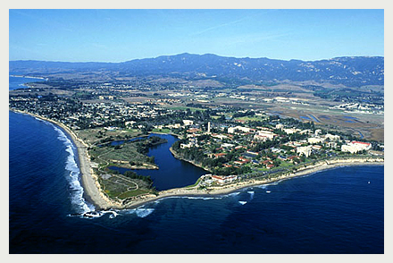
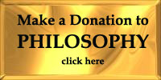

Welcome to the UCSB Department of Philosophy!

Announcements
In mid-2009, the College of Letters and Science launched a
redesigned web page . The site is designed
for several different audiences, including current and prospective
students, alumni, and faculty and staff. It includes feature
stories about faculty and students, which are updated
periodically, and links to current news stories about faculty
research, which are updated several times a week, and also
archived.

UCSB Philosophy News & Events
Important! See below for updated information
regarding the relocation of staff advising & support for the
Philosophy Department.
HIRING: ASSISTANT PROFESSOR, TENURE-TRACK
The Philosophy department is hiring an Assistant Professor for a
tenure-track position. See the announcement for details.
Course Information
Winter 2014 course schedule Tentative Spring 2014 course schedule Archives: M'13 , W'13 , F'12 , M'12 , S'12 , W'12 , F'11 , M'11 , S'11 , W'11 , F'10, S'10, W'10 , F'09 , M'09 .
Office Hours
2013-2014 Colloquia Schedule
Unless otherwise noted, all colloquia events begin at 4:00pm in
South Hall 5617
October 4 - Rusty Jones (Harvard)
October 18 - Klaus Corcilius (UC Berkeley)
October 25 - Jon Winterbottom (UCSB)
November 15 - Daniel Dennett (Tufts)
The Sage Center for the Study of the Mind also has regular talks from fellows, as well as a special guest lecture series throughout the academic year.
Update on administrative changes for Philosophy
Support services will be available at the new South Hall Administrative Support Center:
Student Services, South Hall 3432: x7488 (Undergraduate/Graduate Advising)
Academic Services, South Hall 3431: x7489 (Personnel,
Financial, ESL Program)
Please visit the following link for
up-to-date South
Hall Administrative Support Center Contact Info .
University of California, Santa Barbara
Philosophy Department | 5631 South Hall | Santa Barbara, CA 93106-3090 | (PH) 805-893-7488 (FX) 805-893-8221
© UCSB Philosophy 2006 | Contact Philosophy Webmaster